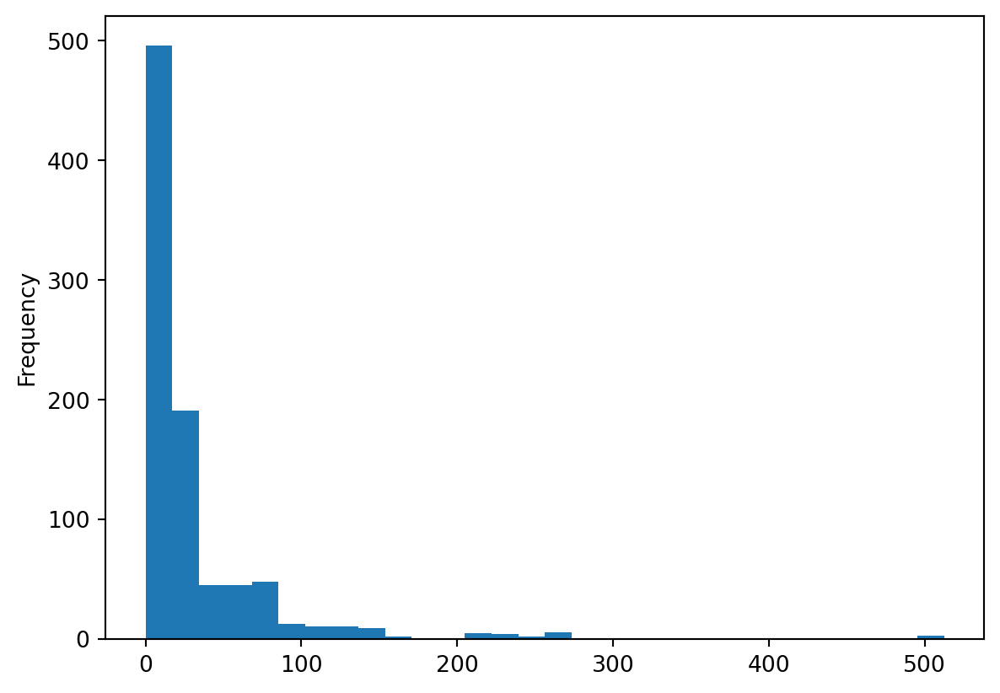

We cover how to detect missing values, how to remove rows or columns with missing values, and how to replace missing values in DataFrames.
import pandas as pdtitanic = pd.read_csv("data/titanic.csv")# ── Detecting missing values ─────────────────────────────────# Count missing values per columntitanic.isna().sum()# Share of missing values per columntitanic.isna().mean().round(3)# Rows with missing agetitanic[titanic["age"].isna()]# Rows with value for agetitanic[titanic["age"].notna()]# ── Dropping missing values ──────────────────────────────────print("Before:", len(titanic))titanic_clean = titanic.dropna()print("After dropping all NaN:", len(titanic_clean))# Only drop rows where age is missingtitanic_no_missing_age = titanic.dropna(subset=["age"])print("After dropping missing age:", len(titanic_no_missing_age))# ── Filling missing values ───────────────────────────────────# Fill missing age with the median agemedian_age = titanic["age"].median()print("Median age:", median_age)titanic["age"] = titanic["age"].fillna(median_age)print("Missing age after fill:", titanic["age"].isna().sum())# ── Missing values and data types ────────────────────────────print(titanic["age"].dtype)titanic["age"] = titanic["age"].astype(int)print(titanic["age"].dtype)titanic.head()
Exercises
Exercise 3.6.1
The healthexp dataset is an unbalanced panel — not every country is observed in every year. To see this clearly, we can convert it into a balanced panel by creating a DataFrame with a row for every possible country-year combination, filling in the observed values where they exist and leaving the rest as NaN.
Run the code below to create the balanced panel, then answer the questions.
import pandas as pdhealthexp = pd.read_csv("data/healthexp.csv")# Create all combinations of country and yearidx = pd.MultiIndex.from_product( [healthexp["Country"].unique(), healthexp["Year"].unique()], names=["Country", "Year"])healthexp_balanced = ( healthexp .set_index(["Country", "Year"]) .reindex(idx) .reset_index())
How many rows does healthexp have before and after the reindex? What does the difference tell you about the panel?
Use .isna().sum() to count missing values per column in healthexp_balanced. Which columns have missing values and how many?
Use .isna().mean().round(3) to compute the share of missing values per column. Which country-year combinations are missing? Filter to rows where Spending_USD is missing and print the result to identify them.
Country 0.000
Year 0.000
Spending_USD 0.105
Life_Expectancy 0.105
dtype: float64
Country Year Spending_USD Life_Expectancy
21 Germany 1991 NaN NaN
52 France 1971 NaN NaN
53 France 1972 NaN NaN
54 France 1973 NaN NaN
55 France 1974 NaN NaN
57 France 1976 NaN NaN
58 France 1977 NaN NaN
59 France 1978 NaN NaN
60 France 1979 NaN NaN
62 France 1981 NaN NaN
63 France 1982 NaN NaN
64 France 1983 NaN NaN
65 France 1984 NaN NaN
67 France 1986 NaN NaN
68 France 1987 NaN NaN
69 France 1988 NaN NaN
70 France 1989 NaN NaN
104 Great Britain 1972 NaN NaN
105 Great Britain 1973 NaN NaN
106 Great Britain 1974 NaN NaN
107 Great Britain 1975 NaN NaN
108 Great Britain 1976 NaN NaN
109 Great Britain 1977 NaN NaN
110 Great Britain 1978 NaN NaN
111 Great Britain 1979 NaN NaN
255 Canada 1970 NaN NaN
257 Canada 1972 NaN NaN
258 Canada 1973 NaN NaN
259 Canada 1974 NaN NaN
260 Canada 1975 NaN NaN
262 Canada 1977 NaN NaN
263 Canada 1978 NaN NaN
healthexp has 274 rows before reindexing, whereas the balanced panel has 306. The difference represents country-year combinations that were not observed in the original data, confirming the panel is unbalanced.
Both Spending_USD and Life_Expectancy have 32 missing values — one per unobserved country-year combination. Country and Year have no missing values because every combination was explicitly created by from_product().
The missing rows is mainly caused by the fact that that not all countries are observed each year at the beginning of the sample, e.g., France is observed only every fifth year until 1990. This is a structural pattern in the missingness, not random data loss, which is important to understand before deciding how to handle it.
Exercise 3.6.2
The deck column in the Titanic dataset has a very high share of missing values. This exercise explores what happens when you use .dropna() without thinking carefully about which columns matter.
import pandas as pdtitanic = pd.read_csv("data/titanic.csv")
Use .isna().sum() and .isna().mean().round(3) to profile the missing values across all columns. Which column has by far the most missing values, and what share of rows are missing?
Run titanic.dropna() without any arguments and print how many rows remain. Explain why so many rows are lost.
Use the subset= parameter to drop only rows where embarked is missing. How many rows are removed this time? Why is this a more sensible choice than dropping all rows with any missing value?
Instead of dropping rows, you can also drop entire columns using the axis= parameter in .dropna(). Look up the documentation for pd.DataFrame.dropna() and use axis=1 to drop all columns that contain any missing values. Which columns are removed? Is this a sensible approach for the deck column?
Solution
import pandas as pdtitanic = pd.read_csv("data/titanic.csv")# 1. Profile missing valuesprint(titanic.isna().sum())print(titanic.isna().mean().round(3))
survived 0
pclass 0
sex 0
age 177
sibsp 0
parch 0
fare 0
embarked 2
class 0
who 0
adult_male 0
deck 688
embark_town 2
alive 0
alone 0
dtype: int64
survived 0.000
pclass 0.000
sex 0.000
age 0.199
sibsp 0.000
parch 0.000
fare 0.000
embarked 0.002
class 0.000
who 0.000
adult_male 0.000
deck 0.772
embark_town 0.002
alive 0.000
alone 0.000
dtype: float64
# 2. dropna() without argumentstitanic_clean = titanic.dropna()print("Rows remaining:", len(titanic_clean))
Rows remaining: 182
# 3. dropna() with subset=titanic_clean_embarked = titanic.dropna(subset=["embarked"])print("Rows remaining:", len(titanic_clean_embarked))
Rows remaining: 889
# 4. dropna() with axis=1titanic_cols_dropped = titanic.dropna(axis=1)print(titanic_cols_dropped.columns.tolist())
The deck column is missing for approximately 77% of passengers — by far the most incomplete column in the dataset. age is missing for about 20% of passengers. All other columns are nearly complete.
Only 182 rows remain after dropna() — down from 891. This is because dropna() removes any row that has a missing value in any column. Since deck is missing for 688 passengers, almost the entire dataset is dropped. Using dropna() without arguments on a dataset with unevenly distributed missingness is almost never the right choice.
Only 2 rows are removed when using subset=["embarked"]. This is a much more surgical approach: we remove only the rows where the specific column we care about is incomplete, leaving the rest of the data intact.
axis=1 drops any column that contains at least one missing value, removing age, deck, embarked and embark_town. For deck — where 77% of values are missing — this is a reasonable decision. For age and embarked, it is far too aggressive: age is an important variable and only 20% missing, while embarked and embark_town have just 2 missing values out of 891. As with row-dropping, column-dropping with axis=1 should be used deliberately and targeted at specific columns rather than applied blindly across the entire DataFrame.
Exercise 3.6.3
The fare column in the Titanic dataset has no missing values, so no imputation is needed. However, it is still worth thinking about what you would do if it did have missing values — because the right imputation strategy depends on the distribution of the data, not just the function you use.
import pandas as pdtitanic = pd.read_csv("data/titanic.csv")
Compute both the mean and median of the fare column and print them side by side. How large is the difference between them?
Plot a quick histogram of fare by running titanic["fare"].plot.hist(bins=30). What does the shape of the distribution tell you?
If fare did have missing values, which would be the more appropriate imputation value — the mean or the median? Explain your reasoning.
Solution
import pandas as pdtitanic = pd.read_csv("data/titanic.csv")# 1. Mean vs medianprint("Mean fare: ", titanic["fare"].mean().round(2))print("Median fare:", titanic["fare"].median().round(2))
Mean fare: 32.2
Median fare: 14.45
# 2. Histogramtitanic["fare"].plot.hist(bins=30)

The mean fare is considerably higher than the median — a clear sign that the two statistics are telling different stories about the same data.
The histogram shows a strongly right-skewed distribution: the vast majority of passengers paid a relatively low fare, but a small number paid very high fares — some above 500. These high-fare outliers pull the mean upward while the median remains closer to what a typical passenger actually paid.
The median would be the more appropriate imputation value. Because the distribution is skewed, the mean does not represent a typical fare — imputing missing values with the mean would assign an unusually high fare to passengers who most likely paid something closer to the median. As a general rule, use the median for skewed distributions and the mean only when the distribution is approximately symmetric.
Exercise 3.6.4
In this exercise you will artificially introduce missing values into the flights dataset and then use forward-filling to impute them.
Run the code below to remove passenger counts for all months in 1954 and 1957:
Look up the documentation for .ffill() by running help(pd.DataFrame.ffill) in the console. What does it do?
The flights dataset is sorted by year first, then month. Apply .ffill() to fill the missing passenger values and print the imputed values for 1954. Do the imputed values look reasonable? Which observation is being used to fill January 1954, and why is this a poor estimate?
Sort flights_missing by month first and then year, and apply .ffill() again. Print the imputed values for 1954 and compare them against the actual values in the original flights dataset. Why does this sort order produce better imputations?
Hint
When the data is sorted by month first, the row immediately above January 1954 is January 1953. This means .ffill() uses the same month from the previous year as the estimate — a much more sensible choice for seasonal data than using the previous month from a different season.
Solution
import pandas as pdflights = pd.read_csv("data/flights.csv")flights_missing = flights.copy()flights_missing.loc[ flights_missing["year"].isin([1954, 1957]), "passengers"] =None# 2. ffill() with default sort order (year first)flights_year_sort = flights_missing.copy()flights_year_sort["passengers"] = flights_year_sort["passengers"].ffill()print(flights_year_sort[flights_year_sort["year"] ==1954][["year", "month", "passengers"]])
year month passengers
60 1954 Jan 201.0
61 1954 Feb 201.0
62 1954 Mar 201.0
63 1954 Apr 201.0
64 1954 May 201.0
65 1954 Jun 201.0
66 1954 Jul 201.0
67 1954 Aug 201.0
68 1954 Sep 201.0
69 1954 Oct 201.0
70 1954 Nov 201.0
71 1954 Dec 201.0
# 3. Sort by month first, then year, and apply ffill()flights_month_sort = flights_missing.sort_values(["month", "year"]).reset_index(drop=True)flights_month_sort["passengers"] = flights_month_sort["passengers"].ffill()# Compare imputed vs actual for 1954imputed = flights_month_sort[flights_month_sort["year"] ==1954].sort_values("month")actual = flights[flights["year"] ==1954].sort_values("month")comparison = pd.DataFrame({"month": actual["month"].values,"imputed": imputed["passengers"].values,"actual": actual["passengers"].values,"diff": actual["passengers"].values - imputed["passengers"].values})print(comparison)
month imputed actual diff
0 Apr 235.0 227 -8.0
1 Aug 272.0 293 21.0
2 Dec 201.0 229 28.0
3 Feb 196.0 188 -8.0
4 Jan 196.0 204 8.0
5 Jul 264.0 302 38.0
6 Jun 243.0 264 21.0
7 Mar 236.0 235 -1.0
8 May 229.0 234 5.0
9 Nov 180.0 203 23.0
10 Oct 211.0 229 18.0
11 Sep 237.0 259 22.0
With the default year-first sort, .ffill() fills January 1954 with the value from December 1953 — the last observed month before the gap. This is a poor estimate because December is a peak travel month while January is typically much quieter. The same problem affects all months in 1954.
Sorting by month first means the row above January 1954 is January 1953, so .ffill() uses the same month from the prior year. For seasonal data like air travel this is a far better proxy. The imputed values are not perfect — they miss the upward trend in passenger numbers over time — but they correctly reflect the seasonal pattern within each year.
Exercise 3.6.5
This exercise asks you to think carefully about how to handle missing values rather than just which function to use. There is no single correct answer — the goal is to reason through each case.
import pandas as pdtitanic = pd.read_csv("data/titanic.csv")print(titanic.isna().sum())print(titanic.isna().mean().round(3))
For each of the three columns below, decide whether you would drop rows, fill with an imputed value, drop the column entirely, or leave as-is. Write a short justification for each decision and, where you choose to fill, explain what value you would use.
age — approximately 20% missing.
deck — approximately 77% missing.
embarked — 2 values missing out of 891.
There is no single right answer. Focus on reasoning through the tradeoffs clearly.
Solution
import pandas as pdtitanic = pd.read_csv("data/titanic.csv")print(titanic.isna().sum())print(titanic.isna().mean().round(3))
survived 0
pclass 0
sex 0
age 177
sibsp 0
parch 0
fare 0
embarked 2
class 0
who 0
adult_male 0
deck 688
embark_town 2
alive 0
alone 0
dtype: int64
survived 0.000
pclass 0.000
sex 0.000
age 0.199
sibsp 0.000
parch 0.000
fare 0.000
embarked 0.002
class 0.000
who 0.000
adult_male 0.000
deck 0.772
embark_town 0.002
alive 0.000
alone 0.000
dtype: float64
These are defensible choices — yours may differ, and that is fine as long as the reasoning is sound.
age — fill with median. 20% is a substantial share to drop outright, and age is likely to be relevant in any survival analysis. Filling with the median is preferable to the mean because the age distribution may be skewed. Alternatively, you could fill using the median within each passenger class, which would give a more accurate estimate — but that requires groupby, which we cover in the next video.
deck — drop the column entirely. 77% of values are missing, almost certainly because deck information was simply not recorded for most passengers. Filling 688 out of 891 rows with an imputed value would mean the column reflects our imputation method far more than it reflects reality. If deck is not critical to your analysis, dropping it is the cleanest choice. If it is important, you should document clearly that most values are imputed and treat results involving deck with caution.
embarked — drop the 2 rows. Only 2 values are missing out of 891. The information loss from dropping these rows is negligible, and there is no sensible basis for imputing a categorical variable like port of embarkation. This is the clearest case: drop the rows.